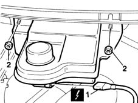
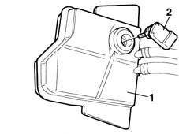

3330A30 brake fluid level indicator device - check device on reservoir - includes plug replacement and level top up if necessary
- Path
- Procedures > 33 BRAKING SYSTEM > 3330 HYDRAULIC BRAKING SYSTEM > 3330A hydraulic brake system tests and checks > 3330A30 brake fluid level indicator device - check device on reservoir - includes plug replacement and level top up if necessary
- Kind
- repair procedure (removal / refitting; the operation number is the code)
- Applies to
- all engines; all production periods
- Interactive page
- https://sloeber94.github.io/elrnDB-fMltpl/en/#/2891605
Applies to: all engines; all production periods
 Removing
Removing
 Refitting
RefittingDisconnect the battery negative (-) terminal.
1. Undo the bolts fixing the brake fluid reservoir.
2. Disconnect the electrical connection for the brake fluid level sensor.
 | Name | Connector |
|---|---|---|
1 | Brake fluid level sensor (switch) | K25 |

Applies to: all engines; all production periods
1. Turn the reservoir upsidedown in order to prevent brake fluid escaping.
2. Remove the sensor for the brake fluid level device which is a press fit on the reservoir.

Applies to: all engines; all production periods
Refitting
RemovingFit the sensor for the brake fluid level device which is a press fit on the reservoir.
Conect the electrical connection for the brake fluid level sensor.
Tighten the bolts fixing the brake fluid reservoir.
Connect the negative (-) battery terminal.